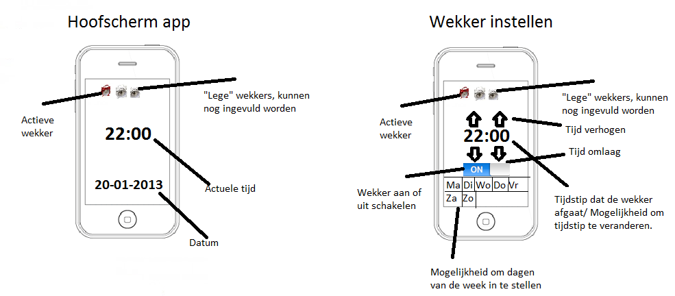

Bij deze opdracht is het de bedoeling om een protoype van een wekker te maken.
Ik heb voor een wekker in de vorm van een applicatie gekozen. Er zijn twee schetsen, die van het hoofdmenu en een menu, waar de wekker wordt ingesteld. De gebruiker kan bij het hoofdmenu bovenaan aanklikken welke wekkers hij inschakelt. De gebruiker kan de wekker instellen door de 1 van de wekkers in te drukken. BIj het instellen van de wekker kan de gebruiker met behulp van de pijltjes omhoog/omlaag de tijd voor het afgaan bepalen. Bij de kolom daaronder kan de gebruiker aangeven welke dagen van de week de wekker actief moet zijn.